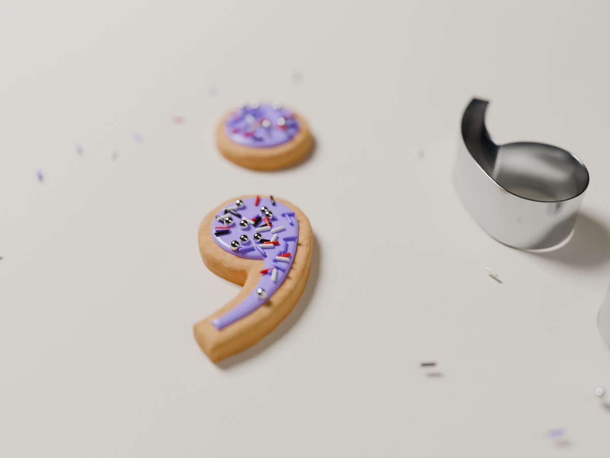
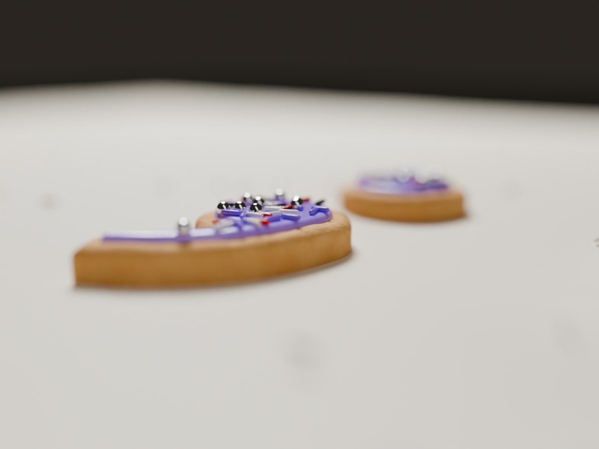
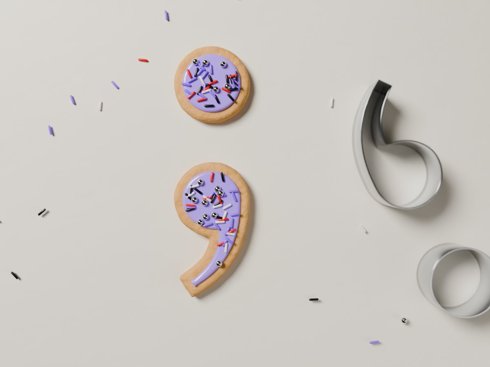

Skizze · Türchen-Idee
Ein Plätzchen ausstechen, verzieren, aus einem schönen Winkel fotografieren. Jedes Foto bekommt eine Nummer und landet in der gemeinsamen Plätzchendose, auf Wunsch auch in Slack. Zwei Richtungen: flach im Strichpunkt-Stil oder fotorealistisch aus Blender.
Idee A
Wie unsere Animationen: Der Strichpunkt ist das Plätzchen. Zuckerguss wird mit dem Finger aufgespritzt, Streusel fallen und hüpfen, was über den Rand rollt, liegt daneben. Läuft auf jedem Handy, schnell gebaut.
Bearbeiten: Form wählen, Belag aus der Leiste ziehen
Nach dem Foto
Was hier gebacken wurde · 147 Plätzchen
Idee B
Echter Teig, glänzender Zuckerguss, Silberperlen, ein Ausstecher aus Blech auf Backpapier. Die Beläge werden einmal in Blender modelliert und im Browser in 3D mit Physik gezeigt. Die Kamera lässt sich drehen; „Foto“ hält den Blick fest. Diese Bilder sind echte Blender-Renderings.

Bearbeiten: Kamera drehen oder einen Blickwinkel wählen

Nach dem Foto
Was hier gebacken wurde · 148 Plätzchen

Für beide